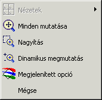
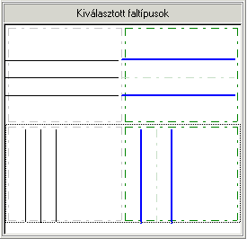

Az épületrajz alapfelület (az épület emeleteinek alaprajzai) elengedhetetlen a padlófûtés installációjának tervezéséhez, mint ahogy a hõveszteség kiszámításánál is felhasználásra kerül. Megrajzolható közvetlenül a programban a megadott elemek segítségével, vagy importálni lehet DWG/DXF formátumú fájlból a falak, ablakok és ajtók értelmezésével. Az import végrehajtása alatt a megfelelõ rétegek kijelölésre kerülnek, amelyekbõl a program felépíti az épületszint teljes szerkezetét – a terv munkalapjára behelyezi a falakat, ablakokat, ajtókat a program objektumaiként értelmezve (ugyanolyanokat, mint amilyenek az alaprajz kézi elkészítésénél is behelyezhetõek), valamint ezen az alapon létrehozza a helyiségek rendszerét.
Megnyílik a fájl importjának ablaka. A baloldalon megjelenik a beolvasott fájl rajzának összes rétege. A képernyõ jobb oldali fõablakában látható a betekintés az importált fájlba. A képernyõ bal, felsõ sarkában találhatóak a megtekintést, a rajz tologatását, valamint az elemek alaprajzi hosszúságának mérését lehetõvé tevõ gombok – e funkciók csak a rajz egységének kiválasztása után hozzáférhetõek.
A rajzmérték egységét a gombok alatt elhelyezkedõ mezõben kell kiválasztani, megnyitva a lehetséges méretek listáját. Az egységnek meg kell felelnie az objektum valódi méreteinek. Lent a program megjeleníti a rajz méretét, vagyis a szélességet és a magasságot a DWG/DXF fájl egységeiben, valamint méterben.
! A rajz megfelelõ mértékegységének az objektum valóságos méreteihez igazodó megválasztásának a grafikai szerkesztõ szempontjából van jelentõsége, amely a méreteket mindig méterben mutatja, és olvassa be. Ezért fontos, hogy az importált rajz megfelelõen legyen skálázva.
A rajz képének területére kattintva a jobboldali egérgombbal, megjelenik egy felbukkanó menü, amelyben a rajz megtekintését lehetõvé tevõ gombokon kívül a megjelenítés opciói is megtalálhatóak, vagyis a háttérszín megváltoztatásának lehetõsége, valamint a Papír <> Modell nézet átkapcsolását biztosító funkció.

¨ A rajz képének eltolásához nyomjuk meg az egér bal gombját, és nem elengedve azt, toljuk a rajzot a megfelelõ irányba. A mûvelet alatt a kurzor a következõ formára vált: .
Az import következõ ablakára lépéshez meg kell nyomni a „Tovább” gombot a képernyõ felsõ részén. A következõ lépés a rétegek kiválasztása, amelyeken a falak találhatóak. Alapértelmezésben egyik réteg sincs kijelölve. A réteg kijelölése annak szaggatott vonallal való megjelenítését idézi elõ. Csak az adott rétegben a mezõ „horoggal” való kijelölése váltja ki annak állandó megjelenítését, és jelenti az adott rétegbõl az elemek kiválasztását értelmezésre.
Alapértelmezésben a program két vonalból álló falakat értelmez. Ha a falak több vonallal vannak megrajzolva (példaképpen: a harmadik vonal a fal szigetelését jelzi), akkor elõfordulhat, hogy nem lesznek jól értelmezve és átrajzolva. Ilyen helyzetben a gombra kell kattintani, majd ráállni a rajz területre, és ki kell jelölni a „többvonalas” falat tartalmazó részletet. Az ablak alsó részében a program megjeleníti a kijelölt részlet képét, és az értelmezés eredményét. Ki kell jelölni néhány jellegzetes falrészletet, és ily módon falrajz típusok jönnek létre a fájlban.

Ha egy falrajz típus feleslegesen, vagy helytelenül lett kijelölve azt el lehet távolítani. Ilyen esetben be kell azt jelölni a „Választott faltípusok” ablakban, és a gombra kattintani.
Az ablak felsõ részében ki kell tölteni a falvastagságot jelölõ részt (min. max. értékek). Ha a programban szerepelnek betonozott szellõzõ vagy kémény csatornák, a megfelelõ értékre kell vastagítani a falakat úgy, hogy ezen elemek megfelelõen legyenek értelmezve. Ezen a helyen ki lehet használni a „Hosszúságmérés” funkciót.
Az import következõ ablakára való váltáshoz, amely az ablakok és ajtók értelmezési ablaka, a „Tovább” gombra kell kattintani. Ebben a fázisban kell kijelölni azon rétegeket, amelyeken az ablakok, és ajtók találhatóak, majd be kell írni a megfelelõ értéket a „Ablakok szélességi tartománya” mezõbe. Itt ki lehet használni a hosszmérést, és ki lehet választani a legnagyobb értéket az ajtó és ablak szélességértékei közül – erre leginkább akkor kell figyelni, ha a programban dupla ajtó fordul elõ. Ekkor a program ezeket helyesen értelmezi.
A program által megjelenített „könyvtárban” az „Ajtók és ablakok fajtája” mezõben ki kell jelölni az összes ajtó és ablaktípust, amelyek rajzilag megegyeznek az importált rajzon szereplõkkel. Nem szabad elmulasztani a dupla ajtók kijelölését, ha szerepelnek a tervben.
A rajzon található elemek, és típusuk pontosabb megtekintése érdekében felhasználhatóak az ablak felsõ részén található a nézet nagyítását és elmozgatását szolgáló gombok.
Az értelmezett ablakok kijelölésének ellenõrzése után a „Tovább” gombra kell kattintani az import utolsó ablakára való váltáshoz. Ez a rajzként beolvasott rétegek kiválasztásának ablaka, vagyis a tervbe grafikai értelmezés nélkül beillesztett rétegeké. Alapértelmezésben minden réteg ki van jelölve. Az egér jobb gombjával a rétegek listájában kattintva a következõ opciók jelennek meg: „Mindent kijelöl”, „Az összes kijelölést megszüntetése”. Ha a fájl értelmezéssel együtt kerül beolvasásra nincs szükség minden réteg újbóli beolvasására rajzalátétként. Itt az összes réteg beolvasásáról le lehet mondani „Az összes kijelölés megszüntetése” menüpontra kattintva. Ki lehet választani csak azokat a rétegeket, amelyek elengedhetetlenek a grafikai alap kitöltéséhez (lépcsõ, helyiségek bebútorozása, stb.).
A „Tovább” gombra kattintva a program elvégzi a rajz értelmezését (ami elég sok idõt vehet igénybe), valamint beolvassa a rajzot a tervbe. A program százalékosan jelzi az értelmezési folyamat állását, befejezõdésekor az értelmezés végét jelzõ üzenet jelenik meg. Az „OK”-ra kattintva a fájl beolvasásra kerül a befogadó területre a „Konstrukció” rétegben. A képernyõn falak, és az általuk képzett helyiségek jelennek meg.
Az értelmezés minõsége mindenekelõtt a beolvasott DWG/DXF csoport minõségétõl, valamint az értelmezés opció beállításaitól függ (különösen a hozzáférhetõ falvastagságtól és ablakszélességtõl). A legjobb eredményeket akkor kapjuk, ha a falak, ajtók és ablakok külön rétegeken szerepelnek.
Ha a program nem 100 %-osan jól értelmezi a rajzot, lehetõség van kézi javításokra úgy, mint fal berajzolására, ajtó, és ablak beillesztésére, stb.
Különösen figyelni kell a program által létrehozott helyiségekre, beállított ablakokra, ajtókra, valamint azok fajtájának és kinézetének helyességére. Ha némelyik helyiség nincs bevonalkázva, az azt jelenti, hogy hiányzik valamilyen, a helyiséget létrehozó fal, vagy a falakat összekötõ csomópont nem lett bezárva. Az eszközsávról történõ kiválasztás után „kézzel” rakva be a falat ki kell egészíteni az alapfelületet, vagy el kell mozdítani a csomópontot. Ha két vagy több helyiség az értelmezés során egy helyiséggé lesz összekapcsolva, akkor a „Fal” elem felhasználásával a helyiséget szükség szerint felosztjuk. Ugyanez vonatkozik az ajtóra és ablakra is, ha valamelyiket a program nem értelmezi, akkor az eszközsávról kell beállítani a megfelelõ helyre.
Az import során a program nem értelmezi, tehát nem jön létre íves fal. A fájl beolvasása után az alapfelületet ki kell egészíteni a nem tipikus falakkal.